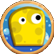
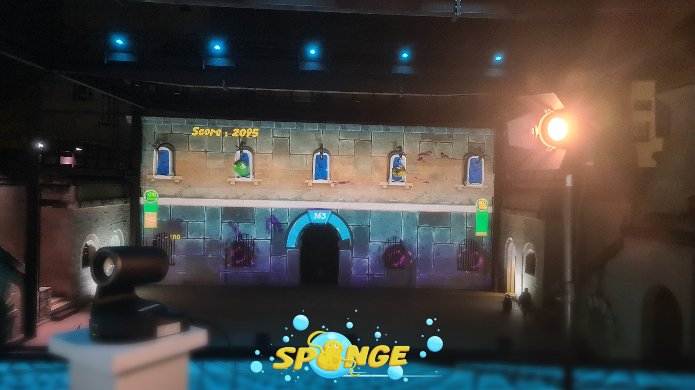
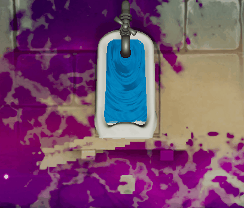
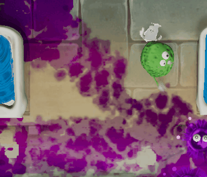
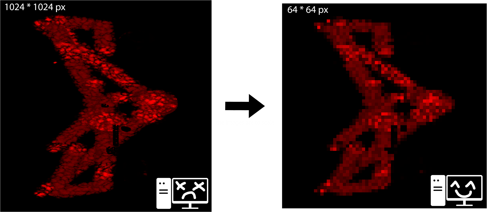

Sponge was a project commissioned by the city of Montpellier for their annual event "Cœur de Ville en Lumière". The goal was to create a 2-player game lasting 3 minutes, projected onto the wall of the Agora amphitheater in Montpellier.
Players control sponges that must clean the wall while fighting off monsters that keep trying to make it dirty again. The objective is to score as many points as possible for the leaderboard.
It was a side project developed alongside our final year project.


As sponges, we scrub the floor as we move, automatically cleaning it. But we can also soak up water from sinks and spit out bubbles to clean the floor and even defeat monsters!

We also have an ultimate ability that charges by defeating enemies. Once ready, it launches a giant bubble that explodes on the ground, cleaning a large area and dealing area-of-effect damage.
Points are earned by having the cleanest surface area on the wall. To determine this, we analyze the RVT texture and calculate the percentage of visible dirt, pixel by pixel.
This method is heavy, so we use a smaller texture that mirrors the RVT. Instead of checking 1 048 576 pixels on a 1024×1024 texture, we only check 4 096 pixels on a dedicated 64×64 texture.
It slightly reduces precision, but the performance gain prevents lag on the hardware provided for the event.
